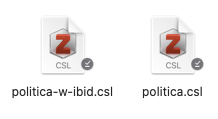
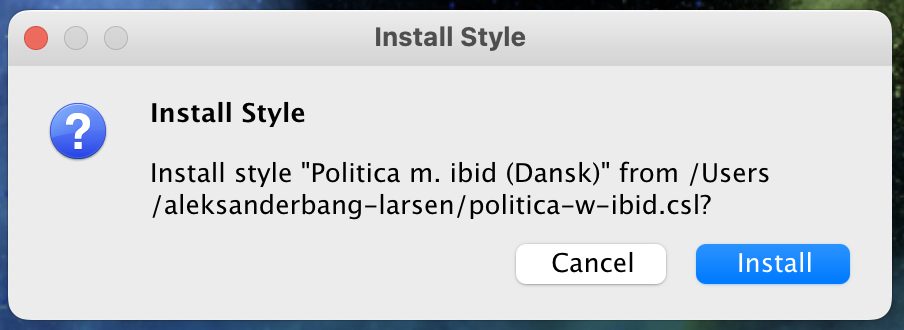

Baggrund
Denne guide er beregnet til dig, der er interesseret i, hvordan man installerer et custom output i Zotero. Måske er du blevet henvist hertil er blevet vist hertil og har fået tilsendt mit speciallavede politica-output til Zotero. Her vil du finde vejledning til, hvordan du importerer og bruger den med dine henvisninger.
Denne guide tager udgangspunkt i, at du allerede har Zotero 6 installeret. Du kan downloade Zotero på programmets hjemmeside.
Ting du skal igennem
- Downloade csl filer og placere et smart sted (f.eks. sammen med zotero)
- Installere output-formatet
- Vælge det som default output
- Bruge output i word
Download og placering af csl-filer
Du skal sørge for, at filerne ligger et sted, hvor du kan finde dem. Jeg har mine til at ligge i OneDrive sammen med mine andre dokumenter.

Hvis du ikke allerede har fået tilsendt csl filerne, kan du hente dem ude til højre.
Hvad er forskellen på politica og politica-w-ibid?
politica.csl er den stil du skal bruge, hvis du ikke ønsker at Zotero laver ibid automatisk eller du ønsker manuelt at skrive ibid. politica-w-ibid.csl er den stil du skal bruge, hvis du ønsker at Zotero automatisk indsætter ibid når du bruger den samme reference to gange i træk; og tæt på hinanden.
Installation af output
For at installere output-stilen skal du blot dobbeltklikke på csl filen på dit drev. Så får du denne besked op:

Her skal du trykke Install og så vil stilen automatisk installeres. Det skal du gentage for alle de output-stiler du vil installere.
Hint: Du kan tjekke de output-stiler der er installeret ved at gå i Settings og under Cite er alle tilgængelige output-stile listet.
Brug af output
Word
FAQ
Jeg har fundet en fejl i outputtet - Hvad gør jeg?
- Hvis du har fundet en fejl i en af de styles jeg har produceret kan du sende mig en mail eller tage fat på mig IRL eller på diverse sociale medier.
- Hvis der er tale om en fejlimplementering i forhold til skrivevejledningen fra politica retter jeg den med glæde.
- Ellers kan vi tale om at producere en stil der passer til dine ønsker.
- Når du kontakter mig vedrørende en fejl er det en god ide at sende din csl-fil med; det gør det nemlig nememre at finde ud af, hvad fejlen er og hvor den findes.
Hvorfor kan jeg ikke bare downloade output-stilen inde i Zotero som man kan med andre?
- Jeg arbejder på at få denne output-stil integreret i den primære downloadside, men det kræver at CSL-projektet vil acceptere den. Du kan læse mere om, hvad det kræver her.
Citat
@online{bang-larsen2024,
author = {Bang-Larsen, Aleksander},
title = {Sådan installerer du et nyt output-format i Zotero},
date = {2024-05-17},
url = {https://aleksanderbl.dk/guides/2024-05-17-installer-output-zotero},
langid = {da}
}